holiday_movies <- read_csv("https://bcdanl.github.io/data/holiday_movies_w_genres.csv")
ggplot( data = holiday_movies,
aes(x = num_votes, y = average_rating) ) +
geom_point() 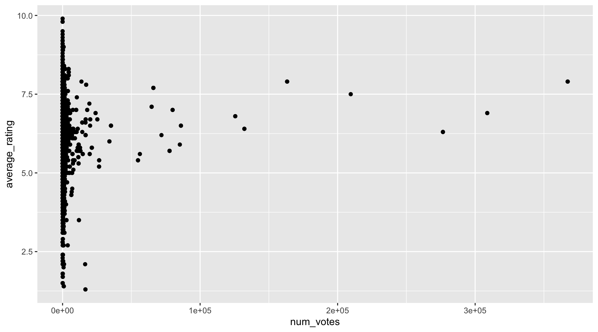
Aesthetic Mappings; Geometric Objects
holiday_movies <- read_csv("https://bcdanl.github.io/data/holiday_movies_w_genres.csv")
ggplot( data = holiday_movies,
aes(x = num_votes, y = average_rating) ) +
geom_point() 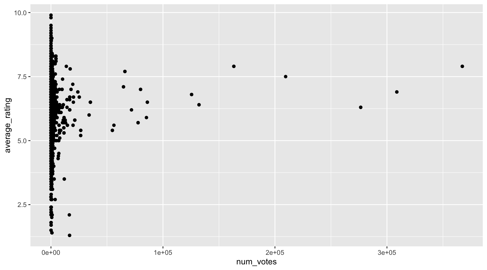
Chunk option eval: false does not execute R code.
ggplot(data = mpg)
+ geom_point( mapping =
aes(x = displ,
y = hwy) )ggplot(data = mpg) +
geom_point( mapping =
aes(x = displ,
y = hwy) )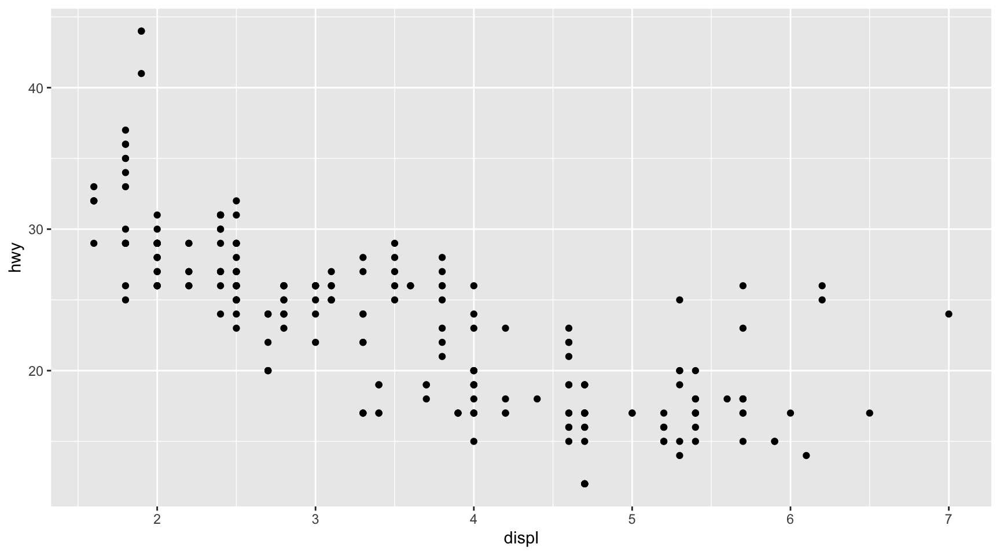
mpg <- mpgggplot(data = mpg) +
geom_point( mapping =
aes(x = displ,
y = hwy,
color = class) )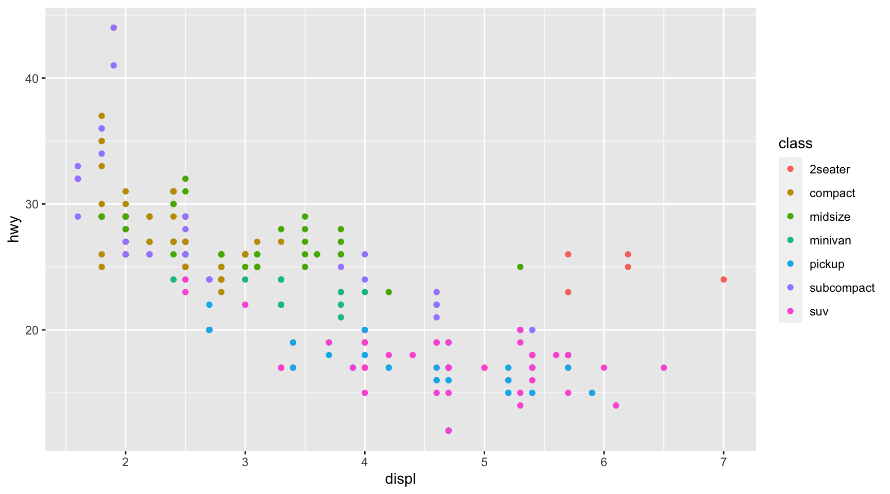
ggplot(data = mpg) +
geom_point(mapping =
aes(x = displ,
y = hwy,
shape = class) )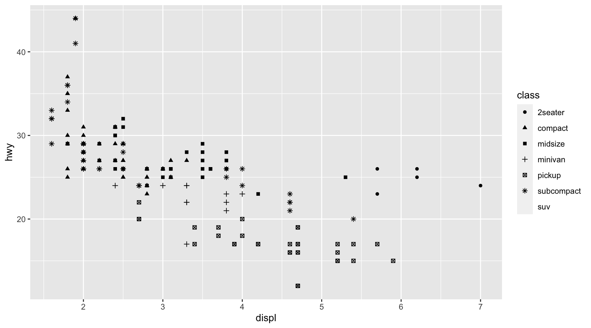
ggplot(data = mpg) +
geom_point(mapping =
aes(x = displ,
y = hwy,
alpha = class) )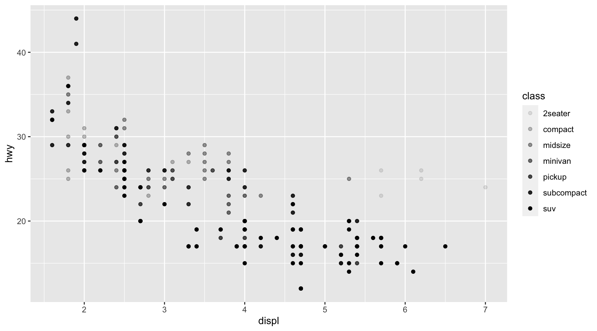
ggplot(data = mpg) +
geom_point(mapping =
aes(x = displ,
y = hwy) )
skimr::skim(mpg)| Name | mpg |
| Number of rows | 234 |
| Number of columns | 11 |
| _______________________ | |
| Column type frequency: | |
| character | 6 |
| numeric | 5 |
| ________________________ | |
| Group variables | None |
Variable type: character
| skim_variable | n_missing | complete_rate | min | max | empty | n_unique | whitespace |
|---|---|---|---|---|---|---|---|
| manufacturer | 0 | 1 | 4 | 10 | 0 | 15 | 0 |
| model | 0 | 1 | 2 | 22 | 0 | 38 | 0 |
| trans | 0 | 1 | 8 | 10 | 0 | 10 | 0 |
| drv | 0 | 1 | 1 | 1 | 0 | 3 | 0 |
| fl | 0 | 1 | 1 | 1 | 0 | 5 | 0 |
| class | 0 | 1 | 3 | 10 | 0 | 7 | 0 |
Variable type: numeric
| skim_variable | n_missing | complete_rate | mean | sd | p0 | p25 | p50 | p75 | p100 | hist |
|---|---|---|---|---|---|---|---|---|---|---|
| displ | 0 | 1 | 3.47 | 1.29 | 1.6 | 2.4 | 3.3 | 4.6 | 7 | ▇▆▆▃▁ |
| year | 0 | 1 | 2003.50 | 4.51 | 1999.0 | 1999.0 | 2003.5 | 2008.0 | 2008 | ▇▁▁▁▇ |
| cyl | 0 | 1 | 5.89 | 1.61 | 4.0 | 4.0 | 6.0 | 8.0 | 8 | ▇▁▇▁▇ |
| cty | 0 | 1 | 16.86 | 4.26 | 9.0 | 14.0 | 17.0 | 19.0 | 35 | ▆▇▃▁▁ |
| hwy | 0 | 1 | 23.44 | 5.95 | 12.0 | 18.0 | 24.0 | 27.0 | 44 | ▅▅▇▁▁ |
nrow(mpg)[1] 234ggplot(data = mpg) +
geom_point(mapping = aes(x = displ, y = hwy),
alpha = .25)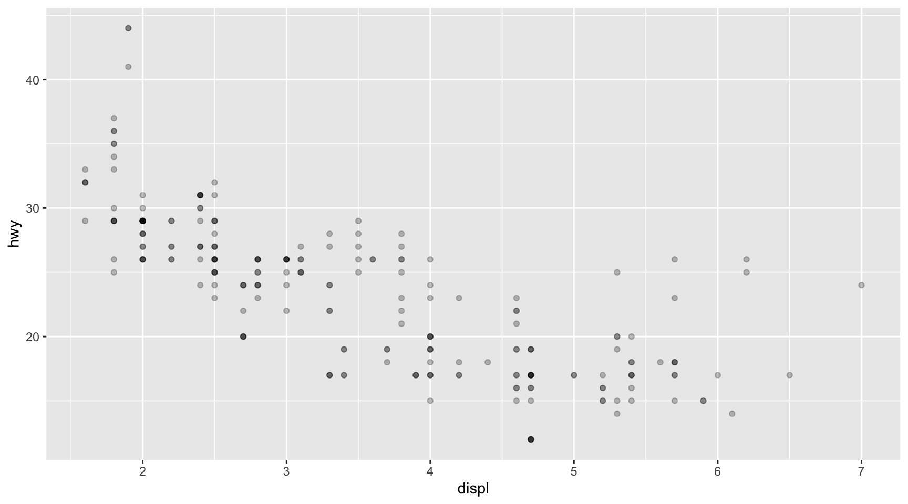
ggplot(data = mpg) +
geom_point(mapping = aes(x = displ, y = hwy),
alpha = 0)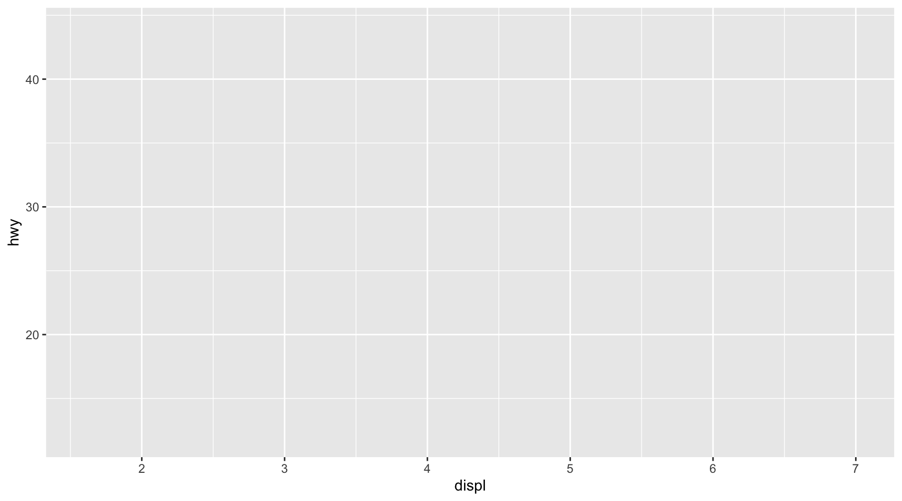
ggplot(data = mpg) +
geom_point(mapping = aes(x = displ, y = hwy),
alpha = 1)ggplot(data = mpg) +
geom_point(mapping = aes(x = displ, y = hwy,
color = class),
alpha = .25)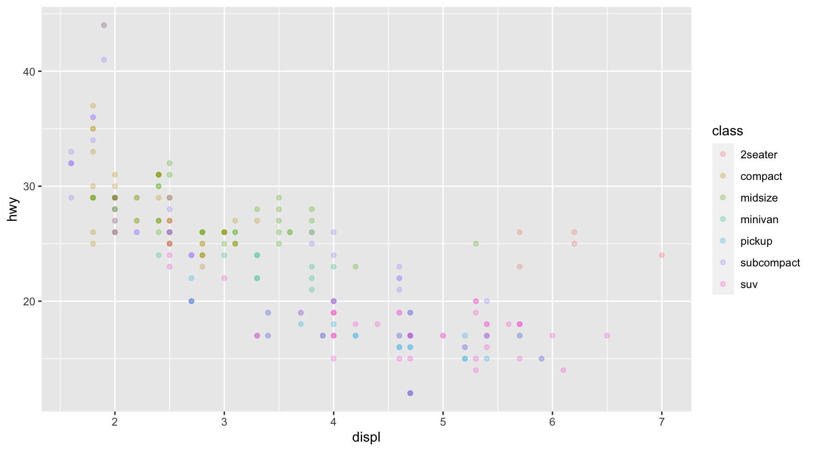
ggplot(data = mpg) +
geom_point(mapping = aes(x = displ, y = hwy),
color = class)ggplot(data = mpg) +
geom_point(mapping = aes(x = displ, y = hwy,
color = class),
shape = 0)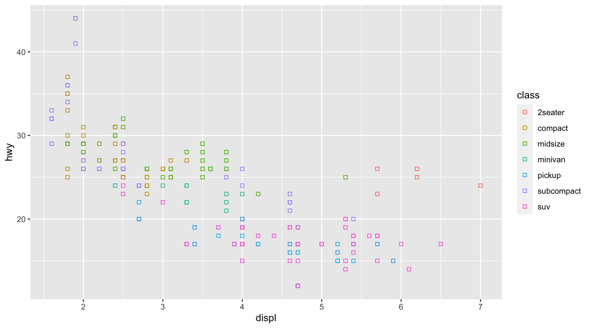
ggplot(data = mpg) +
geom_point(mapping = aes(x = displ, y = hwy,
color = class),
shape = 23)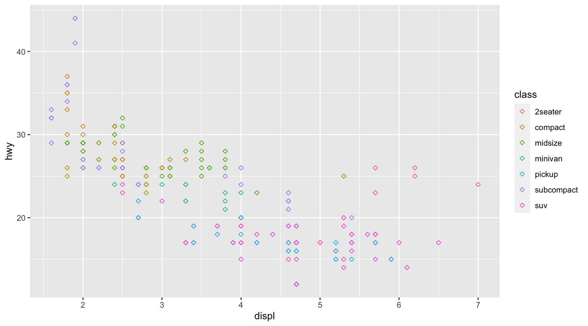
ggplot(data = mpg) +
geom_point(mapping = aes(x = displ, y = hwy,
color = class),
size = 3)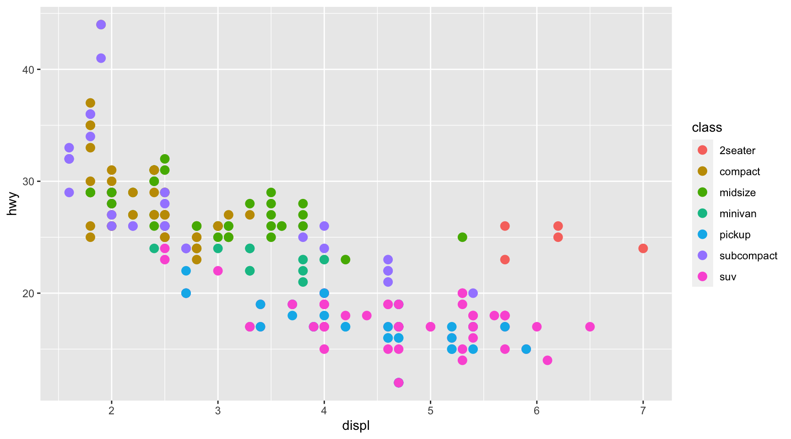
ggplot(data = mpg) +
geom_point(mapping = aes(x = displ, y = hwy,
color = "blue"))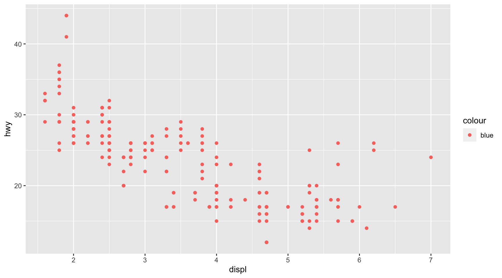
Let me add a new variable, blue_var
# Let me add a new variable, blue_var
mpg <- mpg |> # "|>" is pipe operator, which will be frequently used in the second half of the sester
mutate(blue_var = "blue")
ggplot(data = mpg) +
geom_point(mapping = aes(x = displ, y = hwy,
color = blue_var)) +
labs(color = "colour")mpg |> # pipe shortcut: command/Crtl + Shift + M
count(class)# A tibble: 7 × 2
class n
<chr> <int>
1 2seater 5
2 compact 47
3 midsize 41
4 minivan 11
5 pickup 33
6 subcompact 35
7 suv 62# $: extraction operator to extract a variable in a data.frame
# e.g., data.frame$variable
# unique() returns a vector of unique values in a variable
unique(mpg$class) [1] "compact" "midsize" "suv" "2seater" "minivan"
[6] "pickup" "subcompact"# length() returns the length of a vector
length( unique(mpg$class) )[1] 7length( unique(mpg$displ) )[1] 35